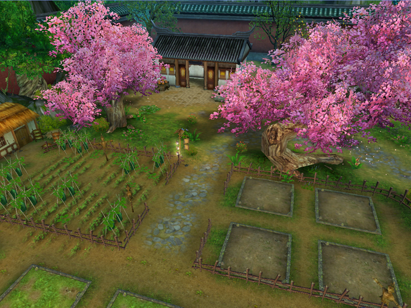

好友互通，组团围猎专属BOSS，种花修树，独享专属农场，金矿满屋，坐拥私人矿山，足不出户，日进斗金。
矿山、农场危机来袭，家园BOSS大肆入侵。《成吉思汗3》家园BOSS每天将在任意时间发起进攻，受到攻击的玩家可以邀请好友一起组团剿灭。
家园BOSS异常凶悍，口袋里装备四处搜刮来的宝贝，在出现后的一段时间内如果还未被击杀的话，BOSS将自动消失。请大家务必在第一时间内组上兄弟朋友前去围猎吧！
家园系统将开放大量的矿山，等级越高，能采到的矿越稀有，矿藏可用来制作、升级坐骑装备或者出售。在采矿的同时，还有机会获得矿藏副本进入符，矿藏副本可以获得双倍的矿石奖励。
采矿的过程中还有一定几率获得黄金宝箱，宝箱里有大量的金币道具，绝对让你爱不释手！
